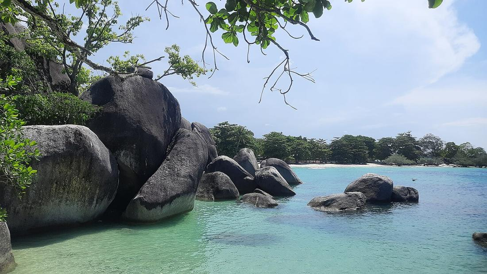

Pantai Tanjung Tinggi: Granit Raksasa di Pesisir Utara Belitung
Pantai di Kecamatan Sijuk yang dikenal lewat film Laskar Pelangi, dengan bongkahan granit raksasa, pasir putih, dan air yang tenang.

Kalau ada satu pemandangan yang langsung bikin orang ingat Belitung, kemungkinan besar itu adalah batu-batu granit raksasa yang berdiri di tepi laut. Salah satu tempat terbaik untuk melihatnya adalah Pantai Tanjung Tinggi di Kecamatan Sijuk, pesisir utara Pulau Belitung.
Dari lokasi syuting jadi ikon wisata
Nama pantai ini makin dikenal setelah dipakai sebagai lokasi syuting film Laskar Pelangi pada 2008. Sejak itu banyak wisatawan menyebutnya "Pantai Laskar Pelangi". Menurut detikTravel, pantai ini juga pernah menjadi lokasi syuting Sang Pemimpi. Tapi jauh sebelum kamera datang, bongkahan granitnya sudah ada di sana sejak zaman yang sangat tua.
Nama "Tanjung Tinggi" sendiri cukup menjelaskan isinya: tanjung berarti semenanjung, dan tinggi merujuk pada batu-batu besar yang menjulang di kedua sisinya.
Batu yang lebih tua dari dinosaurus terkenal
Granit di Tanjung Tinggi dan Tanjung Kelayang adalah bagian dari batolit, yaitu batuan beku yang menjadi dasar wilayah Indonesia bagian barat. Kompas Muda menulis bahwa granit-granit ini berusia hingga 245 juta tahun, terbentuk di perut bumi lalu terangkat ke permukaan lewat proses yang berlangsung jutaan tahun. Beberapa bongkahannya, kata Dinas Pariwisata Kabupaten Belitung, berukuran sebesar rumah.
Kekayaan geologi seperti inilah yang ikut membuat Belitung diakui sebagai UNESCO Global Geopark (baca juga artikel kami tentang Geopark Belitong).
Apa yang bisa dilakukan
- Menyusuri celah batu. Jalan pelan-pelan di antara bongkahan granit dan cari sudut foto yang tidak ramai.
- Berenang di air tenang. Dinas Pariwisata menyebut ombak di sini tenang karena pantainya terlindung oleh teluk dan formasi batu. Tetap perhatikan kondisi laut dan anak-anak, ya.
- Kayak atau paddleboard. Ada penyewaan perahu dan pelampung di sekitar pantai.
- Menunggu matahari terbenam. Pantai ini menghadap ke barat laut, jadi sore hari jadi waktu favorit pengunjung.
Tips berkunjung
Pantai Tanjung Tinggi berjarak sekitar 30–35 km dari pusat Kota Tanjungpandan. Datang pagi (sekitar pukul 07.00–09.00 WIB) kalau mau suasana lebih sepi, atau sore (sekitar 15.30–18.00 WIB) kalau mau melihat sunset. Di sekitar pantai ada area parkir, toilet umum, ruang bilas, dan warung yang menjual hidangan laut, termasuk gangan.
Satu hal yang perlu diingat: batu granit ini sudah berdiri ratusan juta tahun. Jangan dicoret, jangan tinggalkan sampah, dan biarkan ia tetap utuh untuk pengunjung berikutnya.
Sumber: lihat daftar sumber di bawah. Tulisan ini disusun ulang oleh tim iTAP Belitung.
Sumber
- dispar.belitung.go.id/pantai-tanjung-tinggi/
- travel.detik.com/domestic-destination/d-3272902/pesona-laskar-pelangi-di-pantai-tanjung-ti
- muda.kompas.id/baca/2016/07/28/belitung-tempat-waktu-berhenti-di-masa-lalu-2/
- www.openstreetmap.org/way/455667301
Ditulis ulang oleh tim iTAP Belitung dari sumber di atas. Ada yang keliru? Kabari kami lewat Kirim kabar atau email putraanandateguh@gmail.com.